現在時刻: loading…
サーバー時刻: loading…
0.9.5で変わったようです
現在調査中につき写真のみの掲載となります
草原(3)▶︎
["入口左手前","丸石奥","鳥の塔右奥","洞窟入口"]
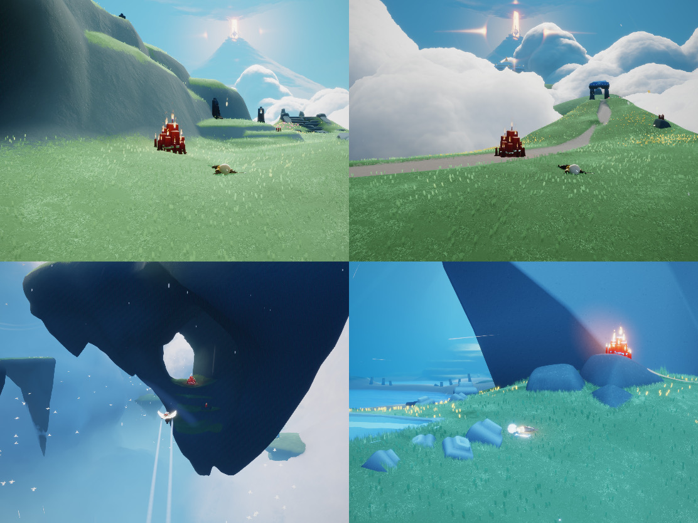
["入口右奥","丸石右","4島中央","神殿内"]
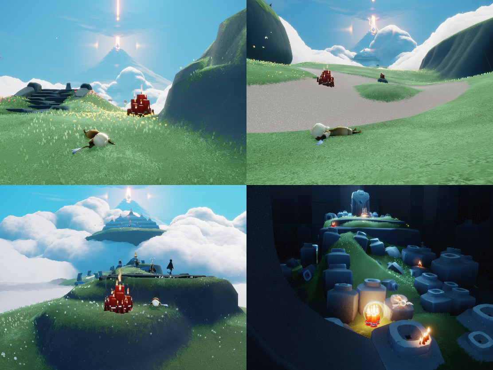
["入口左奥","鳥の塔中央","洞窟内","神殿前"]
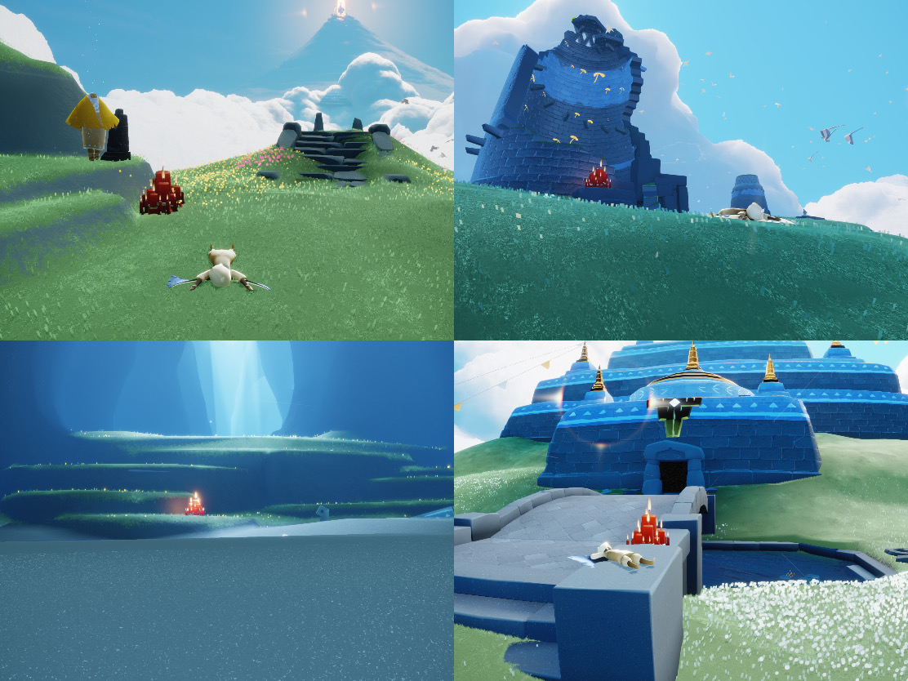
雨林(3)▶︎
["入口右手前","開拓地船","川&蟹木","晴れ間池"]
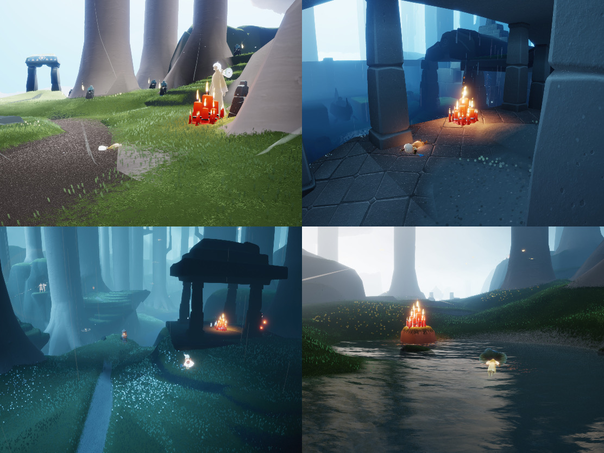
["入口左奥","開拓地奥木","墓所中央","神殿後"]
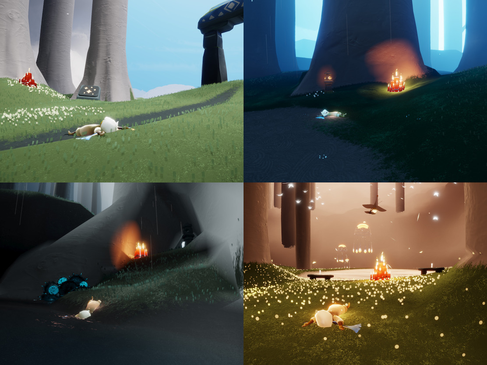
["入口右奥","川&蟹出口","墓所橋","晴れ間奥"]
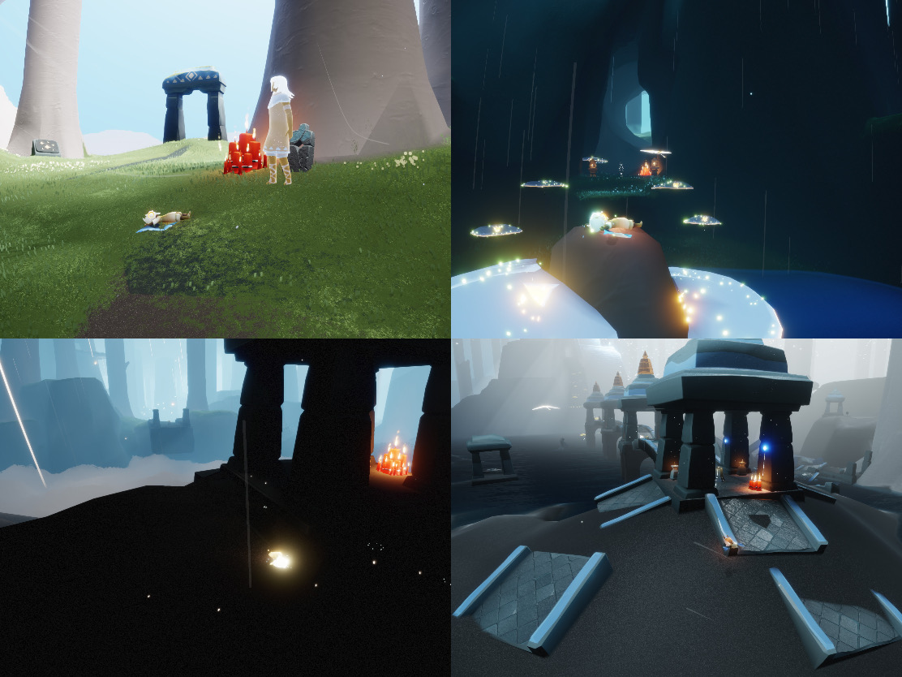
峡谷(2)▶︎
["入口左","スケート橋","天球儀入口","ゴール左"]
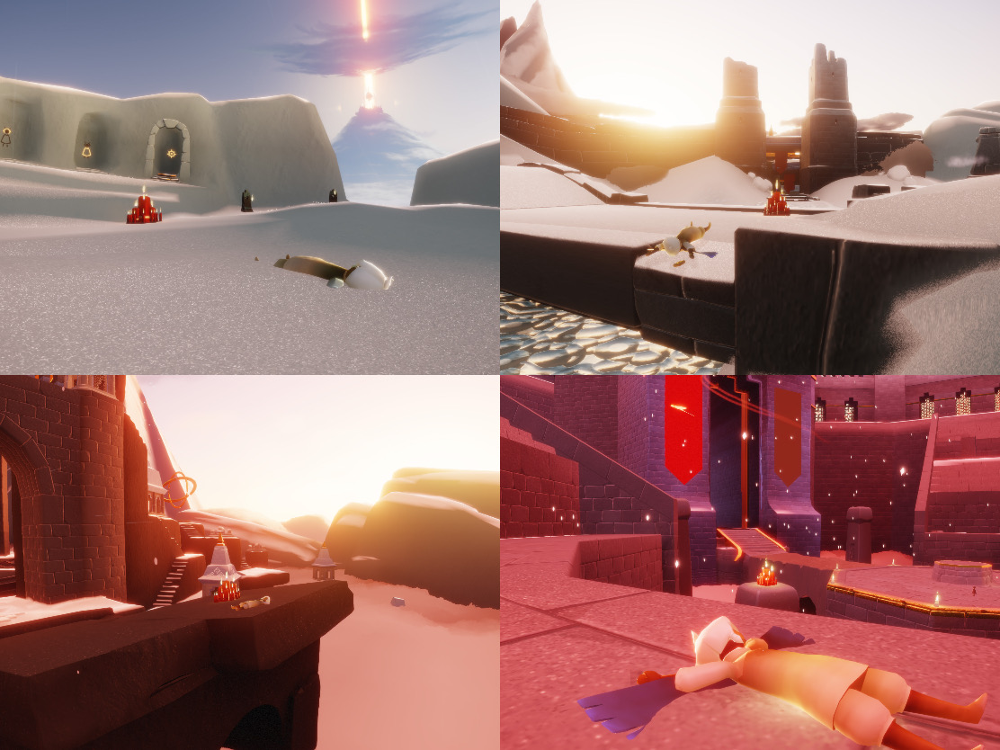
["入口右奥","スケート氷","天球儀出口","ゴール右"]
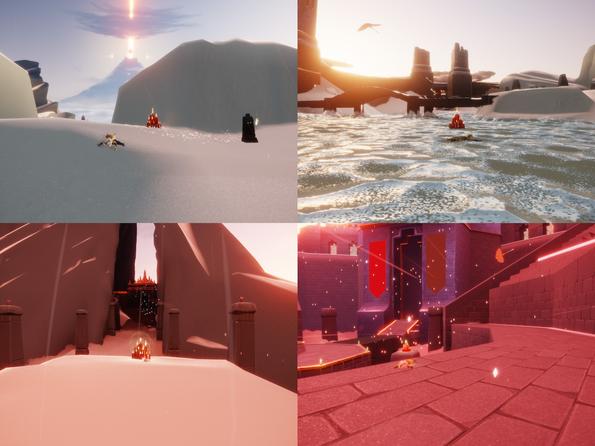
捨て地(3)▶︎
["入口後ろ","祠出口","投石台手前","戦場砦右奥"]
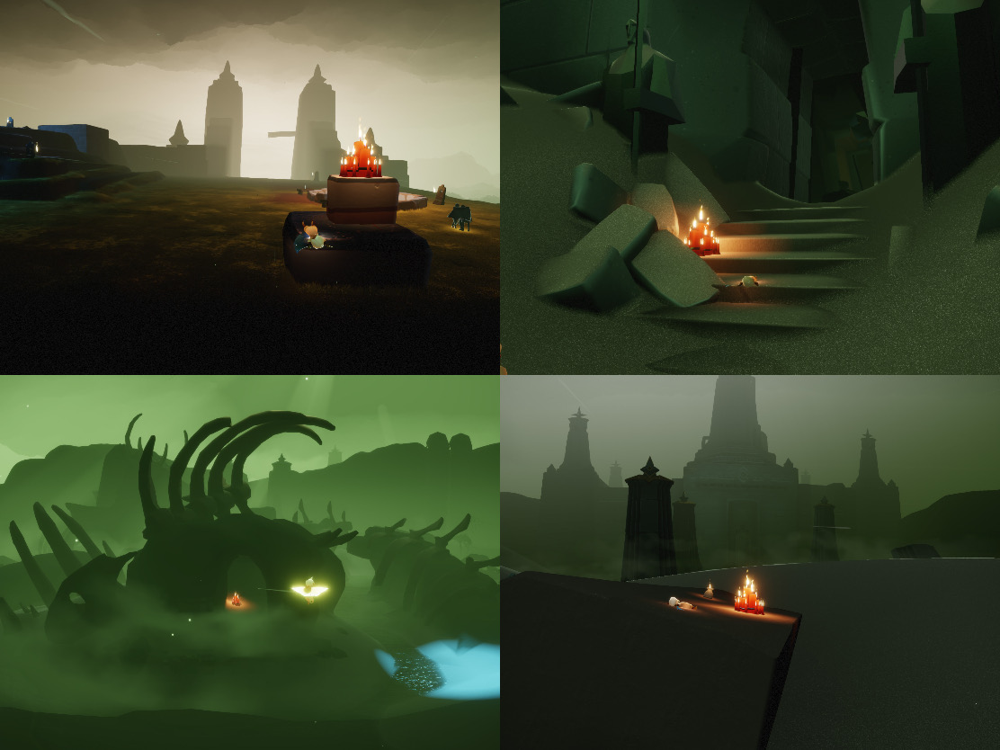
["入口左奥","祠闇花","投石台中央","難破船後端"]
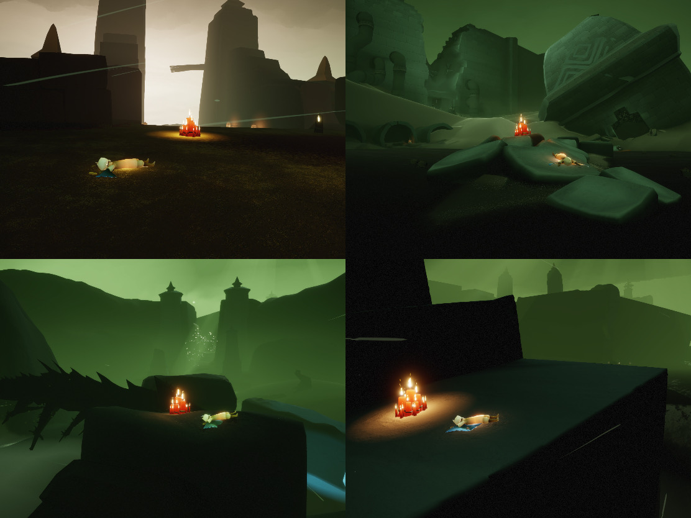
["入口右奥","投石台出口","難破船先端","戦場砦上"]
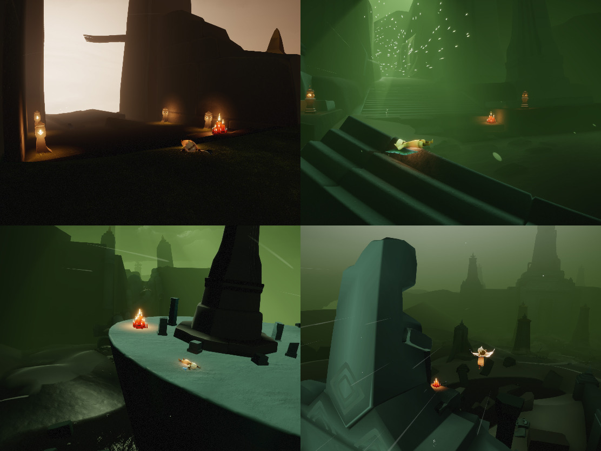
書庫(2)▶︎
["1F手前","1F奥","2F奥","6F手前"]
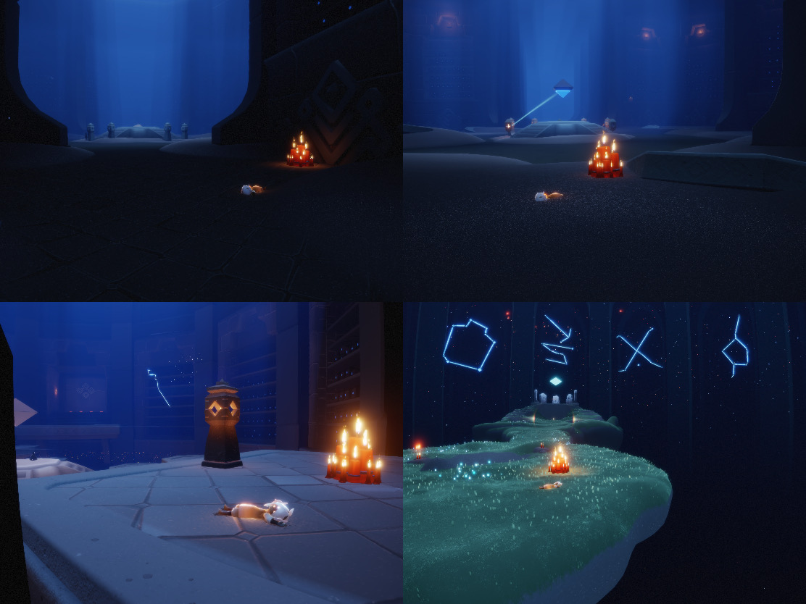
["1F右","2F扉左","4F祠","6F奥"]
大キャンドル参考元:
ティー様